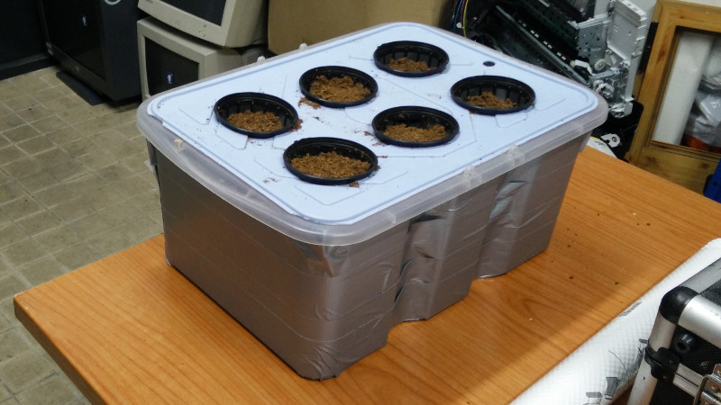

Solarponics
A DIY solar powered aeroponics system, suitable for kickstarting healthy plants indoors without soil.
I'm making this project to learn more about home farming, hydroponics and aeroponics techniques, design of photovoltaic systems and closed loop automation.
Basic aeroponics system

Based on this DIY aeroponics system.
Parts:
- 1x Plastic box
- 6x Hyproponics pots, 5cm
- 1x Coconut fiber brick, 7 liters equiv.
- 1x Nutrient Solution, 1L
- 1x Ultrasonic Mister
Current status:
Basic system is built, need to change a couple of things:
- the box I used was transparent and this helps algae to grow on the nutrient solution. Had to use duck tape to block out light.
- The original power supply broke down and took out the fogger with it (yay, magic underwater blue smoke). Repurposed an old laptop charger to replace it. Next time remember to buy the fogger and the power supply together.
- The original design was made for hydroton pebbles, and I decided to use coconut fiber for mine (supposedly it creates a better environment for the plant roots) but the fiber tends to fall down into the nutrient solution, clogging the fogger and making a mess. I need to line the pots with thule fabric to avoid it.
Next steps
Power control
Use a humidity sensor to turn the fogger on only when needed, to avoid having the system running continuously.
Solar power
Use the measured power consumption to design a photo-voltaic system that allows to use the aeroponics system off-grid
Other ideas
- other sensors (temperature, moisture, electric conductivity, etc)
- control an external water and nutrient reservoir
- sunflower-like pv panel motion